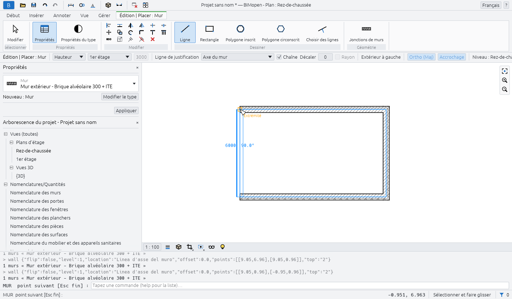
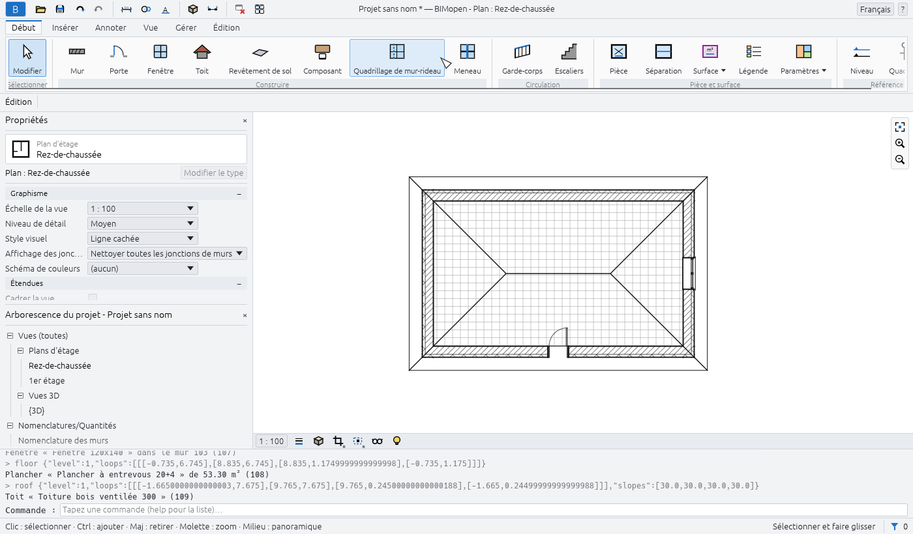
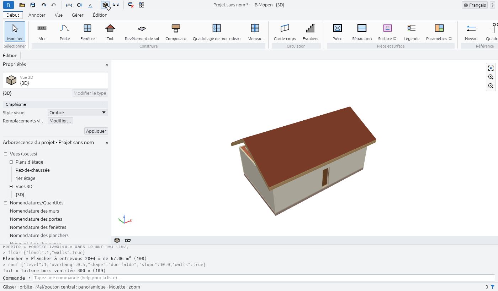
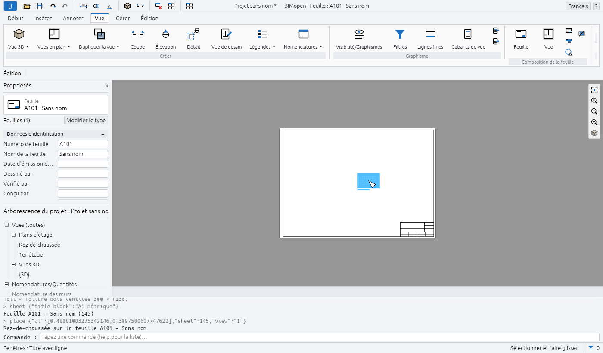

Prise en main
Ce chapitre montre comment lancer BIMopen sur le poste de travail et dans le navigateur, ce que contient le projet d'exemple, et comment modéliser une première petite maison : quatre murs, une porte, une fenêtre, un sol, un toit, une vue 3D et une feuille portant le plan. Cela prend environ dix minutes.
Lancer BIMopen sur le poste de travail
BIMopen se compile à partir de son code source avec Rust, version 1.90 ou ultérieure. Sous Linux, l'interface graphique nécessite aussi les fichiers de développement de xkbcommon, Wayland et GTK 3.
sudo apt-get install -y libxkbcommon-dev libwayland-dev libgtk-3-dev # Debian, Ubuntu
cargo run --release -p bimopen -- --sample # opens the sample house
Le programme s'appelle bimopen. Il accepte un fichier à ouvrir et une option :
| Commande | Ce qu'elle ouvre |
|---|---|
bimopen |
Un nouveau projet vide |
bimopen --sample |
La maison d'exemple |
bimopen house.bimopen |
Le projet enregistré dans house.bimopen |
Vous pouvez aussi ouvrir un projet en faisant glisser un fichier .bimopen depuis le gestionnaire
de fichiers dans la fenêtre.
Langue et thème
La première fois, BIMopen parle la langue du système d'exploitation lorsqu'elle fait partie de ses six langues (italien, anglais, allemand, français, espagnol, arabe), et l'anglais sinon. Pour la changer, utilisez le menu des langues à l'extrémité droite de la barre de titre (le globe avec le nom de la langue), ou Menu de l'application ▸ Options ▸ Langue. L'interface change aussitôt.
Dans Options, vous choisissez aussi le Thème, Clair ou Sombre, et si l'arrière-plan des vues est inversé (Inverser la couleur d'arrière-plan : vues sombres avec des lignes claires). Choisir le thème sombre inverse aussi l'arrière-plan ; vous pouvez désactiver cette inversion. BIMopen mémorise la langue et le thème pour la fois suivante.
Lancer BIMopen dans le navigateur
La version web est le même programme, compilé pour le navigateur. Ouvrez atsanna.github.io/bimopen-site/app/ : elle démarre avec la maison d'exemple. Rien n'est à installer, et le projet reste dans votre navigateur : il n'est envoyé nulle part.
L'adresse accepte les options suivantes, qui peuvent être combinées avec & :
| Adresse | Effet |
|---|---|
app/?lang=de |
Ouvre en allemand pour cette visite (it, en, de, fr, es, ar) |
app/?empty |
Démarre avec un nouveau projet vide au lieu de l'exemple |
app/?webgl |
Dessine avec WebGL2 même là où WebGPU est disponible |
Le navigateur doit prendre en charge WebGPU ou WebGL2. Dans le navigateur, certaines choses fonctionnent différemment :
- Ouvrir… ne peut pas afficher de boîte de dialogue de fichier : faites glisser un fichier
.bimopendans la page pour l'ouvrir ; - Enregistrer et les exportations téléchargent le fichier, sous le nom du projet.
Pour compiler vous-même la version web :
cargo xtask web # builds dist/web
python3 -m http.server 8080 -d dist/web # then open http://localhost:8080
cargo xtask web nécessite la cible wasm32-unknown-unknown de Rust et la commande wasm-bindgen
de la version indiquée dans Cargo.lock ; si wasm-opt de binaryen est installé, le résultat est
plus petit.
Le projet d'exemple
La maison d'exemple montre l'essentiel de ce que BIMopen sait faire. Ouvrez-la avec Menu de
l'application ▸ Projet d'exemple, avec bimopen --sample, ou en tapant sample dans la ligne
de commande.

Elle contient :
- deux niveaux, chacun avec son plan d'étage, et cinq lignes de quadrillage ;
- quinze murs de quatre types, avec des couches, joints aux angles ;
- six portes et douze fenêtres, étiquetées dans les plans ;
- deux sols, un toit à deux pans, un escalier avec ses garde-corps et un mur-rideau de vitrine ;
- du mobilier et des appareils sanitaires, huit pièces colorées selon leur usage, avec une légende ;
- une coupe, une élévation, un plan de surfaces, une vue 3D enregistrée et une vue de dessin avec un détail de mur ;
- des cotes, des notes textuelles et les nomenclatures des murs, portes, fenêtres, pièces et matériaux.
Tip
L'exemple est un bon endroit pour essayer un outil avant de l'utiliser sur votre propre projet : un nouvel exemple est toujours à un clic, et rien de ce que vous y modifiez n'est enregistré si vous ne l'enregistrez pas.
Votre première maison
Les étapes ci-dessous partent d'un projet vide et se terminent par une feuille. Chaque étape indique le bouton sur lequel cliquer ; le chapitre sur l'interface explique chaque partie de la fenêtre.
1. Démarrer un nouveau projet
- Cliquez sur le bouton bleu B à l'extrémité gauche de la barre de titre : le menu de l'application s'ouvre.
- Cliquez sur Nouveau.
Le nouveau projet comporte deux niveaux, Rez-de-chaussée et 1er étage, un plan d'étage pour chacun, et la vue 3D par défaut. Il n'a encore aucun mur. Ses types de murs, portes, fenêtres, sols et toits sont prêts à l'emploi.
2. Ouvrir le plan du rez-de-chaussée
Dans l'Arborescence du projet, sous Vues (toutes) ▸ Plans d'étage, double-cliquez sur Rez-de-chaussée. Le plan s'ouvre dans la zone de dessin et la barre de titre affiche Plan : Rez-de-chaussée.
Note
Un simple clic sur une vue dans l'Arborescence du projet affiche ses propriétés dans la palette Propriétés sans l'ouvrir. Un double-clic l'ouvre.
3. Dessiner quatre murs
- Cliquez sur Début ▸ Construire ▸ Mur. Le ruban passe à l'onglet contextuel Édition | Placer : Mur, la barre des options affiche les réglages du mur, et Propriétés affiche le type du prochain mur, Mur extérieur - Brique alvéolaire 300 + ITE.
- Dans la barre des options, activez Ortho (Maj) : les murs restent horizontaux ou verticaux.
- Cliquez dans le plan à l'emplacement du premier angle. La ligne de commande demande le point
suivant :
WALL next point [Esc to finish]:. - Cliquez sur le deuxième, le troisième et le quatrième angle. Pendant que vous déplacez la souris, la longueur et l'angle du mur en cours de dessin sont affichés à côté de celui-ci.
- Cliquez à nouveau sur le premier angle : les quatre murs sont joints aux angles.
- Appuyez sur Esc pour arrêter la chaîne, puis de nouveau sur Esc pour quitter l'outil.

Tip
Vous pouvez dessiner les mêmes murs en tapant leurs angles en mètres :
wall 0,0 10,0 10,6 0,6 c. Le c final ferme la chaîne. Voir
Ligne de commande et MCP.
4. Ajouter une porte et une fenêtre
- Cliquez sur Début ▸ Construire ▸ Porte, puis cliquez sur un mur à l'emplacement de la porte.
La porte est placée dans le mur, qui est découpé autour d'elle. La ligne de commande le
confirme :
Door «Single swing door 80x210» in wall …. - Appuyez sur Esc : l'outil se termine et le ruban revient à l'onglet Début.
- Cliquez sur Début ▸ Construire ▸ Fenêtre, cliquez sur un autre mur, puis appuyez sur Esc.
Une porte ou une fenêtre ne peut être placée que dans un mur : après un clic à l'écart des murs, la
ligne de commande répond no wall at that point et rien n'est placé.
5. Ajouter un sol et un toit
- Cliquez sur Début ▸ Construire ▸ Revêtement de sol. L'onglet contextuel Édition | Créer la limite du sol comporte un groupe Dessiner offrant deux façons de créer le sol : Ligne de contour, point par point, ou Choisir des murs.
- Cliquez sur Choisir des murs : un sol est créé sur le périmètre extérieur des murs du niveau, et la ligne de commande indique sa surface.
- Cliquez sur Début ▸ Construire ▸ Toit. Dans la barre des options, choisissez la forme (Deux pans, Croupe ou Plat), la Pente (30° par défaut) et le Débord (500 mm par défaut).
- Cliquez sur Choisir des murs dans le groupe Dessiner : le toit couvre les murs du niveau, avec le débord tout autour.

6. L'observer en 3D
Cliquez sur le bouton Vue 3D (le cube) de la barre d'outils d'accès rapide. La vue 3D par défaut, {3D}, s'ouvre. Faites glisser avec le bouton gauche de la souris pour orbiter, faites glisser avec le bouton central (ou avec Shift et le bouton gauche) pour effectuer un panoramique, et tournez la molette pour zoomer. Home ajuste l'ensemble du modèle à la vue.

7. Placer le plan sur une feuille
- Cliquez sur l'onglet Vue, puis sur Composition de la feuille ▸ Feuille. La boîte de dialogue Nouvelle feuille répertorie les cartouches : aucun, A0, A1, A2 ou A3, avec leurs dimensions en millimètres.
- Cliquez sur OK. La feuille est créée avec le prochain numéro libre (A101 pour la première, puis A102…) et s'ouvre.
- Cliquez sur Composition de la feuille ▸ Vue. La boîte de dialogue Vues répertorie les vues qui ne sont pas encore sur une feuille.
- Choisissez Plan : Rez-de-chaussée et cliquez sur Ajouter la vue à la feuille. Le plan est placé sur la feuille à sa propre échelle, 1 : 100, sous forme de fenêtre, qui reste sélectionnée.

8. Annuler, rétablir et enregistrer
- Ctrl+Z annule la dernière modification (ici, la fenêtre disparaît) ; Ctrl+Y la rétablit. Les flèches de la barre d'outils d'accès rapide font de même.
- Ctrl+S enregistre le projet. Un projet jamais enregistré demande d'abord un nom de fichier ;
le fichier porte l'extension
.bimopen. Dans le navigateur, le fichier est téléchargé.
La barre de titre affiche un astérisque après le nom du projet tant qu'il y a des modifications non enregistrées : Projet sans nom *.
Et ensuite
- L'interface décrit chaque partie de la fenêtre.
- Raccourcis clavier répertorie les touches et les raccourcis de deux
lettres, comme
WApour un mur. - Ligne de commande et MCP montre comment taper des commandes, exécuter des scripts et laisser un agent modéliser pour vous.